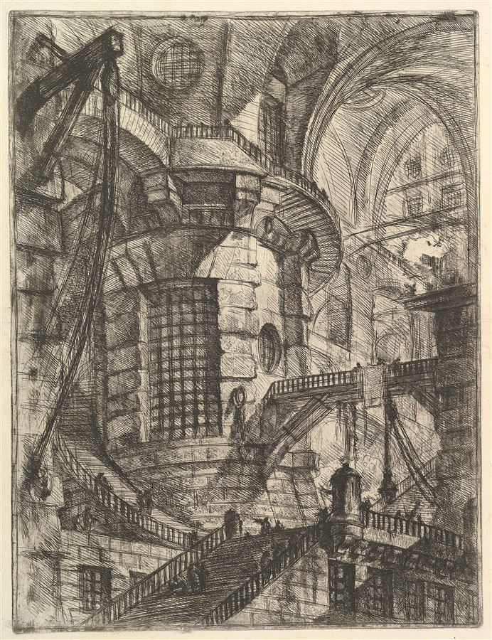

Cogito?Giovanni Battista Piranesi, The Round Tower, from Carceri d’invenzione, c. 1750

Cogito?Giovanni Battista Piranesi, The Round Tower, from Carceri d’invenzione, c. 1750
An endless tower of brains in vats, and what still refers to one act of eating a cake at every level — four questions and their answers
Each observer in the tower replaces the realizer of the cake-eating but never its role. What survives at every level is that role, anchored by the eating itself. Reversing the tower gives the cake no maker; it gives a stronger argument that the anchor is the only thing that can stop the regress.
The conversation sets up a Matrix-style tower of observers, each inside a vat watched by the next, and asks what at an arbitrary level still relates to the original cake-eating. It then asks whether the cake is related to the program of one chosen level, restates the thought experiment for use in another thread, and runs the tower in reverse with the questioner as the observer at infinity.
Charith’s questions are given as he wrote them, with grammar and spelling corrected and nothing else changed. Claude’s answers are reproduced as given in the conversation; a note of files Claude read before answering is left out.
The four exchanges in order, each with where it landed. The gold link is the main answer the rest builds on.
The thought experiment and its first two questions: what survives an unending regress of observers, and whether the cake is related to the program running at one chosen level.
The thought experiment, and what survives every redescription in the tower.
Two things survive the tower, and neither is the cake.
The regress substitutes occupants, never roles. Each On replaces the realizer of my cake-eating (cake → P₁/N₁ → P₂/N₂ → …) while leaving intact the thing being realized. That’s not incidental — it’s what the construction does. A machine built to swap occupants cannot, by design, touch anything specified by role. So the cake-eating, understood as a role fixed laterally by its place in a constraint network, is untouched at every level, including the nth.
O1 never earned his eliminative verdict. His “there’s no real cake” depends on a contrast: real N₁ versus merely apparent cake. O2 removes N₁’s reality, so the contrast collapses retroactively. What O1 actually established was weaker — the cake isn’t at this level. Relocation at every level, forever, means the cake never had a level to be at. It was a role all along, and the regress is what makes that visible.
So what On refers to is the invariant under arbitrary substrate substitution. Two components:
The anchor isn’t optional decoration. Pure structure faces Newman: an isomorphism class over a large enough domain is satisfied trivially. So the invariant can’t be individuated formally — it needs a non-structural terminus. Your regress is an argument that structuralism requires one, which cuts toward the Russellian attractor rather than away from it.
Worth noting what this does to prediction. Every level in the tower predicts my behaviour flawlessly. Predictive adequacy is constant across the entire ascent, so it discriminates nothing about which level’s posits are real. That’s your computational Craig without the transformer — a non-computational version of the same reductio. And intervention doesn’t escape it: On can intervene on Nₙ, but O(n+1) relativises that too.
Whether one arbitrary level’s program stands in a privileged relation to the cake.
Yes to the relation. No to what the sentence is using “related” to do.
The relation is real but it’s realization, not causation or authorship. And it runs the opposite way from what the question assumes.
P₁₆₀₀ is identifiable as P₁₆₀₀ only through my cake-eating. O₁₆₀₀ has countless computations running in his world. Which one is “the program that realizes your cake-eating”? He can pick it out only by what it realizes. So the cake-eating individuates P₁₆₀₀, not the reverse. The role fixes the occupant.
1600 is arbitrary. My cake is related to P₁, P₇, P₁₆₀₀, P₁₆₀₁ — every level, identically. Naming 1600 adds nothing beyond “it has realizers,” which is just the claim that it’s a role. You can’t get a privileged relation out of a tower where no rung is privileged.
Substitution test. Replace P₁₆₀₀ with any P′ computing the same thing on different hardware, different encoding, different substrate. Does my cake-eating change? No. Anything invariant under arbitrary substitution of X is not constituted by X.
“Created by O₁₆₀₀” cancels at 1601. O₁₆₀₀’s act of creating is, for O₁₆₀₁, just N₁₆₀₁ under P₁₆₀₁ — he didn’t author anything in the sense he believes. If he halts P₁₆₀₀, O₁₆₀₁ says no halting occurred; that too was realized from above. Authorship never lands at any rung, exactly as reality never did. Same failure, one predicate over.
There’s a bonus for your Hilbert/Lewis problem here. The tower is a case with infinitely many realizers and no principle selecting one. Lewis’s unique-realization demand has nothing to bite on; Hilbert’s tolerance of multiple models is the only description that fits. That’s a counterexample you can construct rather than assert.
The thought experiment written out for a fresh thread, and then run backward, with the questioner as the observer at infinity who builds the programs downward.
A self-contained version to carry into another thread.
Here it is, self-contained for a fresh thread:
THE VAT TOWER
Assume a Matrix-like scenario with one modification: there are no
bodies at all. Everyone is a brain in a vat.
Inside the simulation, I eat a cake.
Observer O1 sees both inside and outside. From O1's standpoint there
is no cake. My cake-eating consists of a program P1 running,
correlated with neural activity N1 in my vat-brain. O1 takes N1 to be
what is real and the cake to be delusion produced by the simulation.
But O1 is also a brain in a vat. O2 observes him. From O2's
standpoint, O1's seeing-my-delusion-as-P1/N1 is itself just a program
P2 running with neural activity N2 in O1's vat-brain. What O1 called
the real substrate is, for O2, one more appearance.
Iterate without limit: O3, O4, ... On, each with its own Pn and Nn.
No level is final. There is no outermost observer.
Two questions:
1. Even at an arbitrary level On, something still refers to — or
stands in some relation to — my cake-eating. It survives every
redescription in the tower. What is it?
2. Take a random level, say O1600. Is my cake-eating related to
P1600, the program created by O1600? Yes or no, and what kind of
relation is it?
Constraints on any answer:
- Do not terminate the regress by stipulating a genuinely physical
bottom or top level. The construction forbids both.
- Do not answer that the cake is simply nothing. Each On only
relocates the cake one level down; no On ever earns elimination,
because the next observer removes the reality of the substrate he
was contrasting it against.
- The number 1600 is arbitrary. Any answer must say why some level
is, or is not, privileged.
- Note that predictive adequacy is constant across the whole tower:
every level predicts my behaviour flawlessly. So prediction cannot
discriminate between levels.
I can also write a version that states your own position (role vs. occupant, the anchor, the Newman point) if you want the other thread to stress-test the answer rather than generate one.
Whether anything changes when the observer at infinity builds the programs downward.
Same invariant. Different lesson.
The invariant doesn’t move. Role/occupant structure is direction-neutral. Run the substitution test again: swap any P_n for a different realizer computing the same thing, and my cake-eating is unchanged. Whether the chain was discovered upward or authored downward, anything invariant under arbitrary substitution of the chain is not constituted by it. Both components survive — the structural role and the anchoring occurrence.
But one thing does change, and it’s the interesting part. In the ascending tower no level is privileged, because nobody built it. In the reversed version there is an author, so there is a unique realizer — the one you picked. That looks like it restores what Lewis wanted. It doesn’t. Uniqueness here is stipulated, not found. You supplied the realizer-specification yourself, so it was never independent, and the reduction premise has nothing to do. This is your discovery/decision fork made concrete: the reversal shows that Lewisian uniqueness is obtainable only by decision. Which is the Hilbertian verdict arrived at from inside the Lewisian setup.
The loop is the real trouble. If O_i is me, the chain closes. But my act of authoring is itself something that occurs — so where does it sit? Inside the tower, and it’s realized by the tower it generated. Self-grounding is not grounding. That’s worse than the ZFC case you worked through: ZFC is ungrounded but not circular. This is circular.
And there’s a formal obstruction. ω has no last element. “Build backward from O_i” presupposes a predecessor-path from infinity down to P₁, and there isn’t one — no finite descent from ∞ reaches 1. The ascending tower works because each level is added above an existing base. The reversed one requires support that arrives from above, and it never arrives. You get ω*, a non-well-founded descending chain that never bottoms out at the cake.
So the reversal doesn’t give the cake a maker. It gives you a groundlessness argument — which is, as you’ve noted, the right channel for the Meillassoux connection rather than underdetermination.
Net effect: the reversal strengthens the anchor. In the ascending version you could still hope some level was really real. Here the descent cannot terminate by construction, so the only thing capable of stopping it is the one thing that isn’t a realizer of anything — the undergoing.
The thought experiment and the questions are Charith’s, corrected for grammar and spelling only. The answers are Claude’s, as given in the conversation.